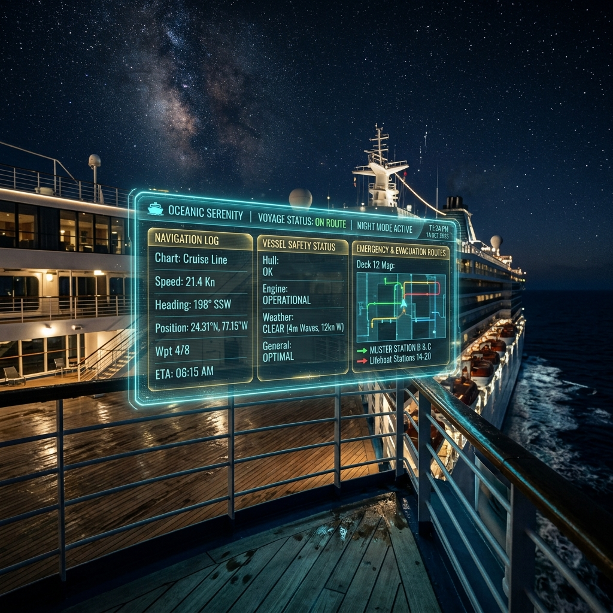
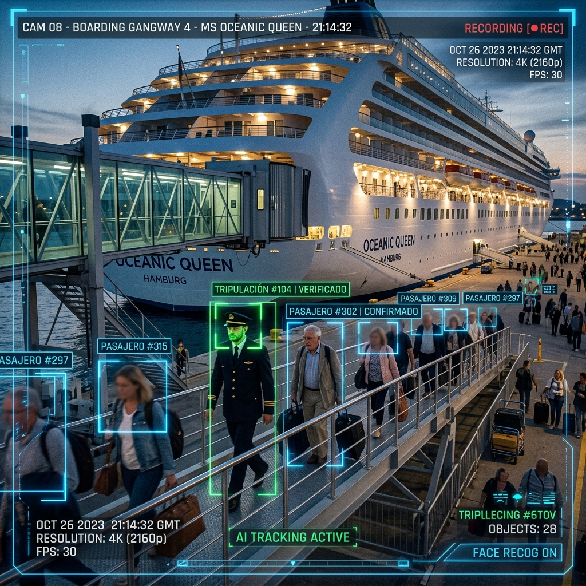

Monitoreo inteligente, inferencia de supervivencia en tiempo real e ingeniería de datos predictiva basada en el histórico de pasajeros del Titanic utilizando modelos estadísticos avanzados.

Simulación digital proyectando rutas de evacuación en tiempo real en la cubierta.
La evolución científica hacia la prevención automatizada y mitigación de fatalidades en el transporte marítimo comercial.
Históricamente, la gestión de emergencias en la navegación comercial ha dependido de protocolos de
evacuación analógicos y de recuentos manuales que carecen de dinamismo predictivo. El desastre del
RMS Titanic en 1912 expuso de manera crítica cómo la distribución socioespacial y la demografía de
los pasajeros determinaron de forma sesgada las probabilidades de supervivencia. En la actualidad,
la disponibilidad de datos estructurados y el surgimiento de la Visión por Computadora (CV) permiten
capturar atributos antropométricos y flujos de movimiento en tiempo real.
La implementación
de modelos de aprendizaje supervisado, como la Regresión Logística (para clasificación binaria de
supervivencia) y la Regresión Lineal (para la estimación continua de tiempos de evacuación),
metodológicamente organizados bajo el estándar CRISP-ML, representa la evolución científica hacia la
prevención automatizada y la mitigación de fatalidades en el transporte marítimo moderno.
A pesar de los avances tecnológicos en los sistemas de navegación, las operaciones de evacuación
masiva en alta mar siguen adoleciendo de un vacío de conocimiento predictivo en tiempo real. Los
planes de contingencia actuales asumen un comportamiento homogéneo de la población a bordo,
ignorando cómo variables correlacionadas (como la densidad familiar, la edad o la localización
física en las cubiertas) alteran críticamente la probabilidad de salvamento.
Existe una
marcada ineficiencia en la velocidad de toma de decisiones de las tripulaciones debido a que la
información visual del entorno no se conecta con modelos estadísticos predictivos. Al no contar con
un sistema integrado (que procese datos de imagen mediante CV, evalúe riesgos con modelos ML de
regresión y se despliegue de manera accesible en interfaces web como Streamlit), se perpetúa el
riesgo de pérdidas humanas por cuellos de botella informacionales durante incidentes críticos. Este
proyecto aborda la necesidad de transformar datos históricos y visuales en herramientas analíticas
desplegables para la toma de decisiones bajo presión.
¿En qué medida la combinación de características sociodemográficas (edad, género, composición familiar) y variables de segmentación socioeconómica/espacial (clase de pasaje y ubicación en cubierta) permiten predecir con exactitud la tasa de supervivencia de los pasajeros y modelar el tiempo de respuesta ante siniestros marítimos, integrando técnicas de Visión por Computadora y Regresión Estadística?
Estructuración de variables y componentes analíticos para garantizar la viabilidad del modelado predictivo.
El pasajero individual a bordo de una embarcación de transporte masivo.
La probabilidad de supervivencia u optimización de evacuación ante un siniestro.
• Regresión Logística: Variable categórica binaria (Sobrevive / No Sobrevive).
• Regresión Lineal: Tiempo estimado de evacuación (variable continua simulada).
• Atributos Demográficos (Extraídos por CV): Género (Sex) y Edad
(Age).
• Atributos Socioeconómicos y de Ubicación: Clase de boleto (Pclass),
Tarifa (Fare) y zona de camarote/cubierta (Cabin).
• Atributos de Estructura Familiar: Número de hermanos/cónyuges
(SibSp) y padres/hijos (Parch) a bordo.
Condiciones climáticas imprevistas, fallos estructurales concurrentes del navío, y el sesgo de comportamiento humano bajo situaciones de pánico extremo.
Modelado retrospectivo basado en el evento histórico del Atlántico Norte (1912), extrapolable analíticamente a simulaciones de contingencia en sistemas de transporte marítimo contemporáneos (2026).
Estructura de desarrollo ágil y sistemática aplicada para garantizar la calidad del modelado de datos.
Definición del objetivo: clasificar la supervivencia (variable categórica `Survived`) y predecir el costo del pasaje (variable continua `Fare`). Se analizan la distribución original de datos y los atributos sociodemográficos para modelado predictivo.
Limpieza profunda de datos: imputación de valores faltantes utilizando medidas robustas como la mediana para la edad (`Age`) y la moda para los puertos de embarque (`Embarked`). Codificación numérica de etiquetas categóricas mediante mapeos óptimos.
Entrenamiento de modelos supervisados duales: Logistic Regression para la clasificación binaria de supervivencia, y Linear Regression para estimar el costo de boletos. Integración en un ciclo lógico interactivo.
Validación rigurosa a través de partición Train-Test. Cálculo de métricas: exactitud (Accuracy) y Matriz de Confusión para clasificación; coeficiente R² de determinación, MAE y MSE para la regresión continua del pasaje.
Implementación de un modelo de detección y conteo en tiempo real para optimizar la seguridad marítima. A través del análisis digital de imágenes, la IA cuenta automáticamente el volumen de tripulación que cruza las pasarelas o cubiertas del transatlántico.
Delineado digital preciso de rostros y contornos corporales en la pasarela de embarque.
Contabilización en tiempo real para control de aforo y listas de pasajeros.
Soporte de datos biométricos para localización inmediata de tripulantes durante emergencias.
Los datos numéricos del conteo se transmiten a las interfaces de Realidad Aumentada de la cabina.

El sistema cuenta de forma automática a los pasajeros en el muelle de abordaje.